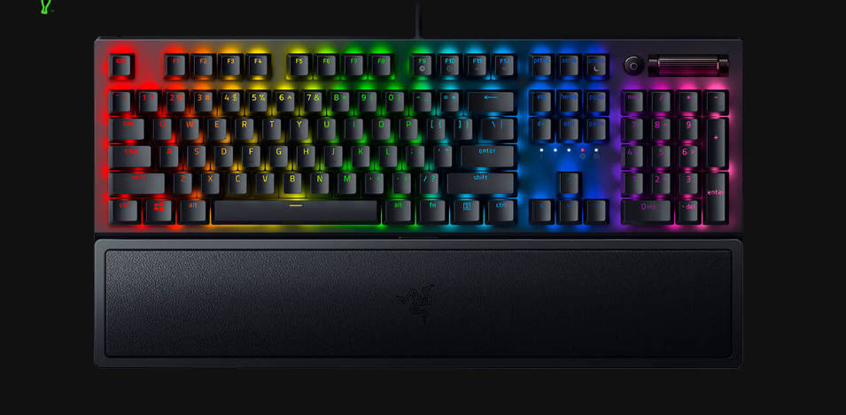

Autor: Zhong Yi
The history of computers goes back over 200 years. At first theorized by mathematicians and entrepreneurs, during the 19th century mechanical calculating machines were designed and built to solve the increasingly complex number-crunching challenges. The advancement of technology enabled ever more-complex computers by the early 20th century, and computers became larger and more powerful.
Englishman,Charles Babbage,invneted in the 1830's a "Difference Engine"made out of brass and pewter rods and gears,and also designed a further device which he called an "Analytical Engine".His design contained the five key characteristics of modern computer.
1.An imput device
2.Storage for number calculator
3.A processor or number calculator
4.A unit to control the task and the sequence of its calculations
5.An output device
Augusta Ada Byron(later Counters of Lovelave)was an associate of Babbage who has become known as the first computer programmer.
A central processing unit (CPU), also called a central processor, main processor, or just processor, is the most important processor in a given computer.[1][2] Its electronic circuitry executes instructions of a computer program, such as arithmetic, logic, controlling, and input/output (I/O) operations. This role contrasts with that of external components, such as main memory and I/O circuitry, and specialized coprocessors such as graphics processing units (GPUs).
Keyboard keys (buttons) typically have a set of characters engraved or printed on them, and each press of a key typically corresponds to a single written symbol. However, producing some symbols may require pressing and holding several keys simultaneously or in sequence.[3] While most keys produce characters (letters, numbers or symbols), other keys (such as the escape key) can prompt the computer to execute system commands. In a modern computer, the interpretation of key presses is generally left to the software: the information sent to the computer, the scan code, tells it only which physical key (or keys) was pressed or released.[4]In normal usage, the keyboard is used as a text entry interface for typing text, numbers, and symbols into application software such as a word processor, web browser or social media app. Touchscreens use virtual keyboards.